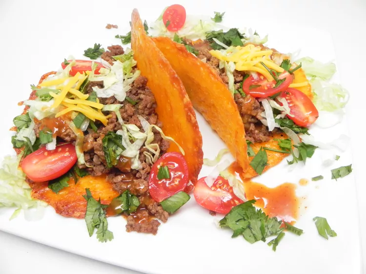

Keto Beef Tacos

Description
Plan a low-carb taco night with these irresistible, keto-friendly beef tacos made with cheese taco shells, avocados, tomatoes, and lettuce.
Ingredients
- 2 cups shredded Cheddar cheese
- 1 pound ground beef
- ½ package taco seasoning mix
- ½ teaspoon salt
- ¼ teaspoon ground black pepper
- 1 avocado, diced
- 1 cup shredded lettuce
- ½ cup shredded Cheddar cheese
- ½ cup tomatoes, diced
Steps
- Preheat oven to 350 degrees F (175 degrees C). Line 2 baking sheets with parchment paper or silicone mat.
- Spread Cheddar cheese into four 6-inch circles, placed 2 inches apart.
- Bake in the preheated oven until cheese melts and is lightly brown, 6 to 8 minutes.
- Cool for 2 to 3 minutes before lifting with a spatula. Place over wooden spoon handle wrapped in aluminum foil balanced over 2 cups/cans. Let taco shells cool completely, about 10 minutes.
- Cook beef in a skillet over medium-high heat until browned, stirring often to separate meat, about 7 minutes. Season with taco seasoning, salt, and pepper; cook for 1 minute more.
- Divide beef mixture among cheese taco shells. Top with avocado, lettuce, Cheddar cheese, and tomatoes.